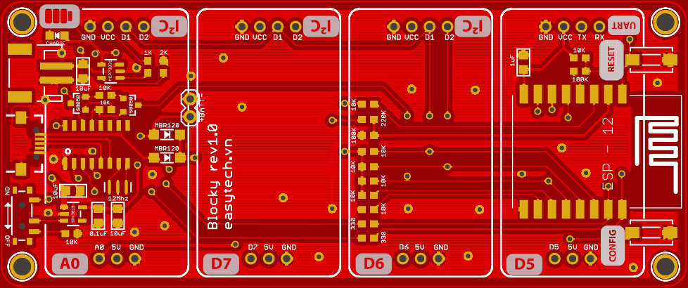

<!--

    Copyright © 2017 The Blocky Authors

    Licensed under the Apache License, Version 2.0 (the "License");
    you may not use this file except in compliance with the License.
    You may obtain a copy of the License at

        http://www.apache.org/licenses/LICENSE-2.0

    Unless required by applicable law or agreed to in writing, software
    distributed under the License is distributed on an "AS IS" BASIS,
    WITHOUT WARRANTIES OR CONDITIONS OF ANY KIND, either express or implied.
    See the License for the specific language governing permissions and
    limitations under the License.

-->
<div flex layout="row" id="code-lab">
    <div flex id="main-content" layout="column">
        <div ng-include src="vm.blocklyToolbox"></div>
        <div id="blocklyDiv" style="position: absolute" ng-show="!vm.script.mode || vm.script.mode ==='block'"></div>
        <div flex ui-ace="vm.luaEditorOptions" ng-show="vm.script.mode ==='lua'" ng-model="vm.script.lua"></div>
    </div>

    <md-sidenav flex-gt-sm="25" flex="30" id="side-bar" class="md-whiteframe-1dp md-sidenav-right" md-is-locked-open="vm.isSidenavOpen && $mdMedia('gt-xs')"
        md-component-id="right">
        <div flex layout="column" layout-padding>
            
            <div layout="row" id="device-actions">
                <div layout="row">
                    <md-button ng-disabled="!vm.isUserLoaded || !vm.currentDevice" ng-click="vm.uploadScript('run')" class="md-icon-button" aria-label="Device Menu">
                        <md-tooltip md-direction="bottom">
                            Send and run script without saving. Mainly for testing purpose.
                        </md-tooltip>
                        <i class="fa fa-arrow-circle-right" aria-hidden="true"></i>
                    </md-button>
                    <md-button ng-disabled="!vm.isUserLoaded || !vm.currentDevice" ng-click="vm.uploadScript('ota')" class="md-icon-button" aria-label="Device Menu">
                        <md-tooltip md-direction="bottom">
                            Send and save script. It will be run every time blocky starts.
                        </md-tooltip>
                        <i class="fa fa-upload" aria-hidden="true"></i>
                    </md-button>
                </div>
                <md-select ng-model="vm.currentDevice" placeholder="Select a device" class="md-no-underline">
                    <md-option ng-repeat="device in vm.devices | orderBy:'name'" ng-value="device">
                        <i ng-class="device.status ? 'fa fa-circle device-online' : 'fa fa-circle device-offline'" aria-hidden="true"></i> {{device.name}}
                    </md-option>
                </md-select>

                <md-menu md-position-mode="target-right target">
                    <md-button ng-disabled="!vm.isUserLoaded" class="md-icon-button" aria-label="Device Menu" ng-click="$mdOpenMenu($event)">
                        <md-tooltip md-direction="bottom">
                            Device Settings
                        </md-tooltip>
                        <i class="fa fa-cog" aria-hidden="true"></i>
                    </md-button>
                    <md-menu-content width="4">
                        <md-menu-item ng-show="vm.currentDevice">
                            <md-button ng-click="vm.renameDevice()">
                                <md-icon md-menu-align-target aria-label="Rename Device" class="material-icons">edit</md-icon>
                                <span translate>Rename Device</span>
                            </md-button>
                        </md-menu-item>
                        <md-menu-item ng-show="vm.currentDevice">
                            <md-button ng-click="vm.deleteDevice()">
                                <md-icon md-menu-align-target aria-label="Delete Device" class="material-icons">delete</md-icon>
                                <span translate>Delete Device</span>
                            </md-button>
                        </md-menu-item>
                        <md-menu-item>
                            <md-button ng-click="vm.addDevice($event)">
                                <md-icon md-menu-align-target aria-label="Setup device" class="material-icons">add</md-icon>
                                <span translate>Setup device</span>
                            </md-button>
                        </md-menu-item>
                    </md-menu-content>
                </md-menu>
            </div>
            <md-card flex id="device-log">
                <md-toolbar class="md-primary md-hue-1">
                    <md-card-header layout="row" layout-align="center">
                        <md-card-header-text flex>
                            <span class="md-title">Device Log</span>
                        </md-card-header-text>
                        <md-button aria-label="Clear Log" ng-click="vm.clearDeviceLog()">
                            <i class="fa fa-ban" aria-hidden="true"></i>
                        </md-button>
                    </md-card-header>
                </md-toolbar>
                <md-card-content flex>
                    <p ng-bind-html="vm.currentLog"></p>
                </md-card-content>
            </md-card>
        </div>
    </md-sidenav>
</div>

<div id="footer" layout="row" class="md-whiteframe-4dp">
    <md-button class="md-accent md-raised tb-editor-mode" ng-click="vm.changeMode($event)">
        <i class="fa" ng-class="vm.script.mode ==='block' ? 'fa-code' : 'fa-cubes'" aria-hidden="true"></i>
        <span hide-xs hide-sm> {{vm.script.mode ==='block' ? 'Lua' : 'Block'}} Mode</span>
    </md-button>

    <md-input-container flex="30" hide-xs>
        <label>Project Name</label>
        <input required name="clientName" ng-model="vm.script.name">
    </md-input-container>
    <md-button ng-click="vm.saveProject()" ng-disabled="!vm.script.name" hide-xs>
        <i class="fa fa-floppy-o" aria-hidden="true"></i>
        <span hide-sm> Save</span>
    </md-button>
    <md-button ng-click="vm.newProject()" hide-xs>
        <i class="fa fa-file-text-o" aria-hidden="true"></i>
        <span hide-sm> New</span>
    </md-button>
    <md-button ng-click="vm.openProject($event)" hide-xs>
        <i class="fa fa-folder-open-o" aria-hidden="true"></i>
        <span hide-sm> Open</span>
    </md-button>
    <md-button ng-click="vm.duplicateProject()" hide-xs>
        <i class="fa fa-files-o" aria-hidden="true"></i>
        <span hide-sm> Duplicate</span>
    </md-button>
    <md-button ng-click="vm.downloadProject()" hide-xs>
        <i class="fa fa-download" aria-hidden="true"></i>
        <span hide-sm> Download</span>
    </md-button>
    <md-button ng-show="vm.script.id" ng-click="vm.deleteProject()" hide-xs>
        <i class="fa fa-trash-o" aria-hidden="true"></i>
        <span hide-sm> Delete</span>
    </md-button>

    <!-- In Mobile -->
    <md-button aria-label="Save Project" ng-click="vm.saveProjectMobile()" hide-gt-xs>
        <i class="fa fa-floppy-o" aria-hidden="true"></i>
    </md-button>
    <md-button ng-disabled="!vm.isUserLoaded || !vm.currentDevice" aria-label="Upload Script" ng-click="vm.uploadScript('run')"
        hide-gt-xs>
        <i class="fa fa-arrow-circle-right" aria-hidden="true"></i>
    </md-button>
    <md-button ng-disabled="!vm.isUserLoaded || !vm.currentDevice" aria-label="Upload Script" ng-click="vm.uploadScript('ota')"
        hide-gt-xs>
        <i class="fa fa-upload" aria-hidden="true"></i>
    </md-button>
    <md-select ng-model="vm.currentDevice" placeholder="Select a device" class="md-no-underline" hide-gt-xs>
        <md-option ng-repeat="device in vm.devices | orderBy:'name'" ng-value="device">
            <i ng-class="device.status ? 'fa fa-circle device-online' : 'fa fa-circle device-offline'" aria-hidden="true"></i> {{device.name}}
        </md-option>
    </md-select>

    <span flex></span>
    <md-button aria-label="Side Nav" ng-click="vm.toggleSidenav()" hide-xs>
        <i ng-class="vm.isSidenavOpen ? 'fa fa-chevron-right' : 'fa fa-chevron-left'" aria-hidden="true"></i>
    </md-button>
    <md-button aria-label="Bottom Sheet" ng-click="vm.showBottomSheetActions()" hide-gt-xs>
        <i class="fa fa-ellipsis-v" aria-hidden="true"></i>
    </md-button>
</div>